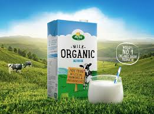
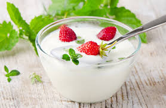
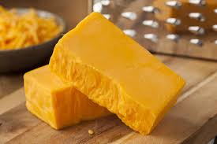
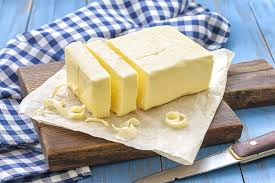
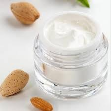

Organic Milk (Full Cream)
Price: ₹60
Quantity: 1 Litre
Description:
Our organic full cream milk is sourced from grass-fed cows, ensuring a rich and creamy texture.
Free from artificial hormones and antibiotics, it is perfect for drinking, cooking, or baking.
Organic Yogurt (Plain)
Price: ₹50
Quantity: 500g
Description:
Creamy and tangy, our organic plain yogurt is made from fresh milk and live cultures.
It is perfect for breakfast, smoothies, or as a base for dressings and dips.


Organic Cheese (Cheddar)
Price: ₹300
Quantity: 200g
Description:
Our organic cheddar cheese is aged to perfection, offering a sharp and rich flavor.
Made from milk of cows raised without antibiotics or growth hormones, it is ideal for sandwiches,
salads, or as a snack.
Organic Butter (Salted)
Price: ₹80
Quantity: 200g
Description:
Our organic salted butter is made from the cream of grass-fed cows, providing a rich and creamy taste.
Perfect for spreading on bread, cooking, or baking, it is free from artificial additives.


Organic Cream (Heavy)
Price: ₹100
Quantity: 250g
Description:
Our organic heavy cream is perfect for whipping, cooking, or adding richness to desserts.
Sourced from cows raised on organic pastures, it is free from preservatives and artificial flavors.